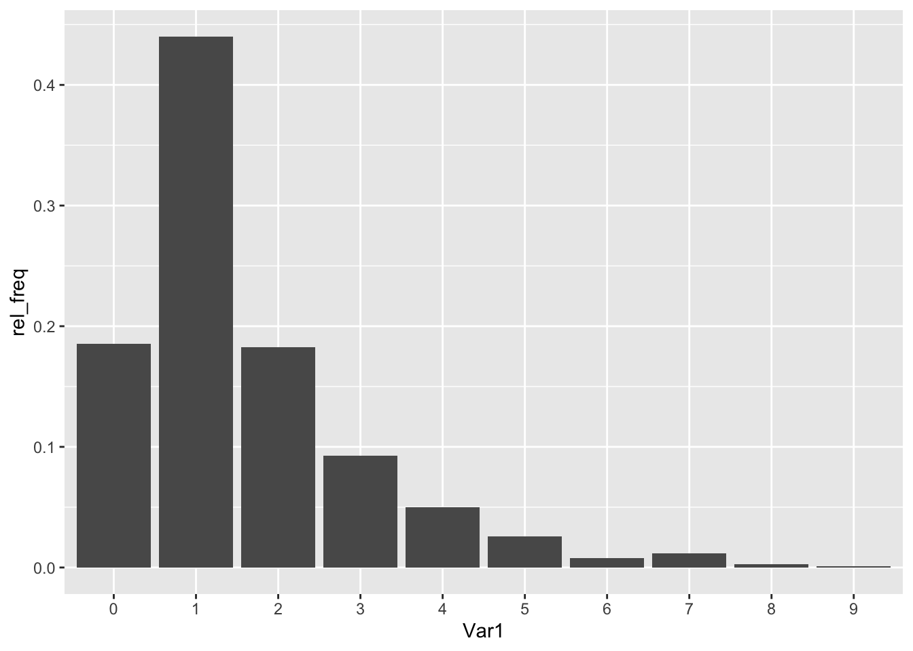

Lab 3: Probability Distributions
Jenny Wagner, PhD, MPH
Department of
Public Health
California State University, Sacramento
Introduction
1. Constructing and describing a discrete probability distribution
Question text: Suppose patients who were involved in a problem gambling treatment program were surveyed about co-occurring drug and alcohol addictions. Let the discrete random variable X represent the number of co-occurring addivtive substances used by the subjects. The dataset labeled “substances.csv” contains two variables: (1) a study ID number corresponding to each individual patient; and (2) the number of substances used by the corresponding patient.
(a) Construct a table showing the frequency and relative frequency for this discrete distribution.
# construct frequency table and save it as a new dataframe
subs <- as.data.frame(table(data$substances))# create a new variable for the relative frequency (i.e., the proportion of subjects with each number of substances used)
subs <- subs %>% mutate(rel_freq = Freq/(sum(Freq)))
print(subs) # print will make the table appear in your knitted file; otherwise it won't show up there## Var1 Freq rel_freq
## 1 0 144 0.185328185
## 2 1 342 0.440154440
## 3 2 142 0.182754183
## 4 3 72 0.092664093
## 5 4 39 0.050193050
## 6 5 20 0.025740026
## 7 6 6 0.007722008
## 8 7 9 0.011583012
## 9 8 2 0.002574003
## 10 9 1 0.001287001(b) Create a graph of the probability distribution for these data.
# create bar chart of relative frequencies (for each number of substances used)
ggplot(subs, aes(x=Var1, y=rel_freq)) +
geom_bar(stat = "identity")
For the next set of probability questions, it will be helpful to convert our discrete random variable X (currently labeled ‘Var1’) to a numeric variable.
(c) What is the probability that an individual selected at random used five addictive substances?
# We can actually find this answer just by looking at our discrete probability distribution; however, if you want to use a code, the following will work:
sum(subs[which(subs$Var1 == 5), 3])## [1] 0.02574003The probability that an individual selected at random used five addictive substances is 0.02574, as shown in the relative frequency table above where X = 5.
(d) What is the probability that an individual selected at random used fewer than three addictive substances?
# sums the values in column 3 (rel_freq) on condition that Var1 is equal to 2, 1, or 0.
sum(subs[which(subs$Var1 < 3), 3])## [1] 0.8082368# an alternative method using 'filter'
subs %>% filter(Var1 < 3) %>% dplyr::summarise(sum(rel_freq))## sum(rel_freq)
## 1 0.8082368# and another method, using R as a simple calculator
0.185328185 + 0.440154440 + 0.182754183 # sum of relative frequencies for X < 3## [1] 0.8082368(e) What is the probability that an individual selected at random used more than six addictive substances?
## sum(rel_freq)
## 1 0.01544402(f) What is the probability that an individual selected at random used between 2 and 5 addictive substances?
## sum(rel_freq)
## 1 0.35135142. Binomial distribution
Question text: Based on data collected by the Centers for Disease Control and Prevention (CDC), an estimate of the percentage of adults who have at some point in their life been told they have hypertension is 48.1% percent. Assume that ‘N’ is sufficiently large relative to ‘n’ that the binomial distribution may be used to find the desired probabilities.
(a) Suppose we select a simple random sample of 20 U.S. adults and assume that the probability that each has been diagnosed with hypertension is .48.
i. What is the probability that exactly eight have been diagnosed with hypertension?
# the function 'dbinom' is used to find the probability for a specific number of successes
# the syntax is dbinom(x, n, p) where x = number of successes, n = number of trials, and p = probability of success
dbinom(8, 20, 0.48)## [1] 0.1387513ii. What is the probability that fewer than eight have been diagnosed with hypertension?
# the function 'pbinom' is used to find the cumulative probability up to a specific number of successes
# in other words, 'pbinom' gives us P(X <= x)
# the syntax is pbinom(x, n, p) where x = number of successes, n = number of trials, and p = probability of success
pbinom(7, 20, 0.48)## [1] 0.1739206iii. What is the probability that eight or more have been diagnosed with hypertension?
# since 'pbinom' will give us the probability that 7 or fewer have been diagnosed with hypertension, we must subtract this probability from 1 to get the probability that 8 or more will have hypertension.
1 - pbinom(7, 20, 0.48)## [1] 0.8260794(b) Find the mean and variance of the number of people diagnosed with hypertension in samples of size 20.
# one way to do this is to calculate the mean and variance using R as a simple calculator
# remember that the mean of a binomial distribution is equal to n(p) and variance is n(p)(1-p)
20*0.48 # mean## [1] 9.6## [1] 4.992
3. Poisson distribution
Question text: In a certain population, an average of 13 new cases of esophageal cancer are diagnosed each year.
(a) Suppose the annual incidence of esophageal cancer follows a Poisson distribution.
i. What is the probability that, in a given year, the number of newly diagnosed cases of esophageal cancer will be exactly 10?
# note: the function 'dpois' gives the probability that exactly 'x' number of events occur within the time period.
# the syntax for 'dpois' is ppois(x, lambda), where 'x' is the number of events of interest, and lambda is the mean.
dpois(10, 13)## [1] 0.08587015ii. What is the probability that, in a given year, the number of newly diagnosed cases of esophageal cancer will be 12 or fewer?
# note: the function 'ppois' gives the cumulative probability that 'x' or fewer events occur within the time period.
# the syntax for 'ppois' is ppois(x, lambda), where 'x' is the number of events of interest, and lambda is the mean.
ppois(12, 13)## [1] 0.4631047iii. What is the probability that, in a given year, the number of newly diagnosed cases of esophageal cancer will be at least eight?
## [1] 0.94597184. Normal distribution
Question text: One of the variables collected in Birth Registry data is pounds gained during pregnancy. According to data from the entire registry for 2021, the number of pounds gained during pregnancy was approximately normally distributed with a mean of 30.23 pounds and a standard deviation of 13.84 pounds.